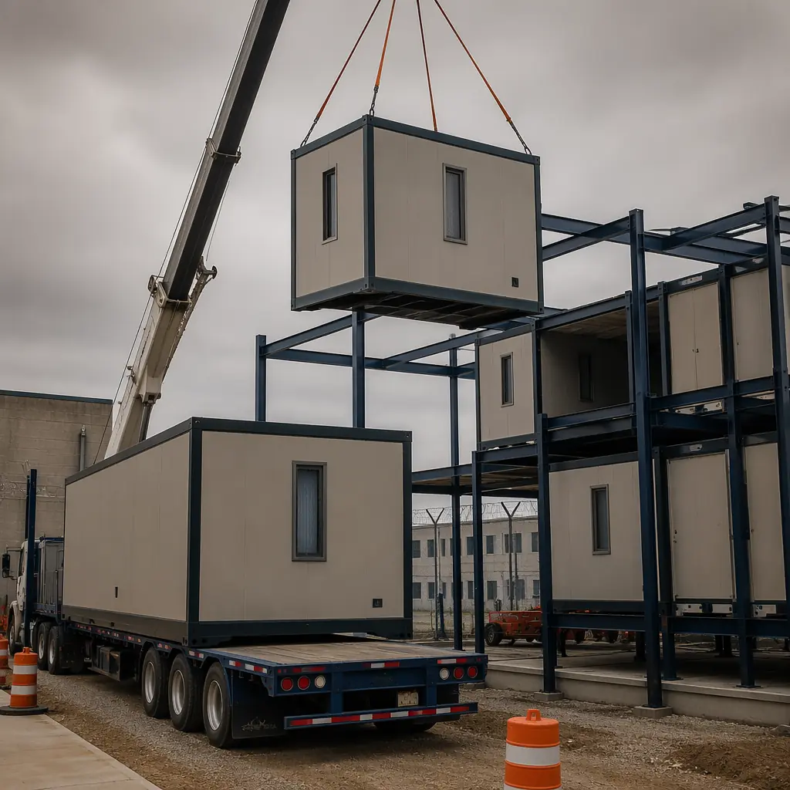
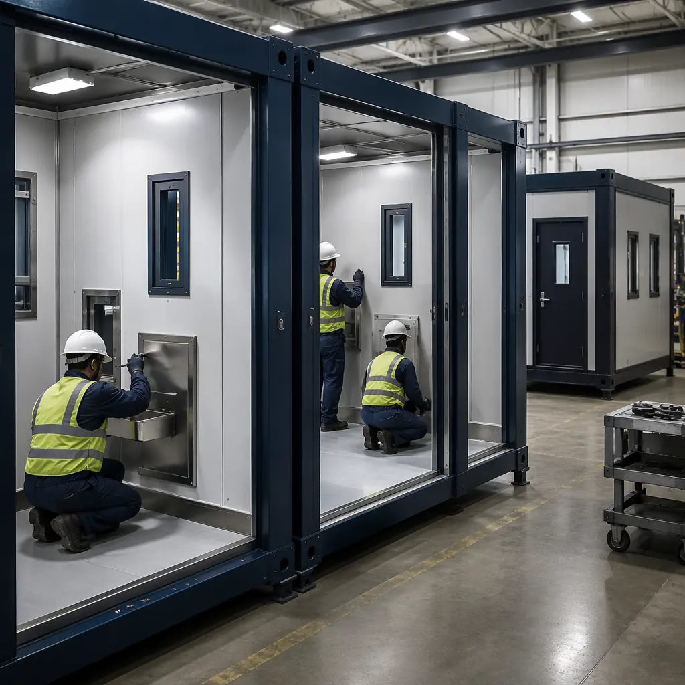
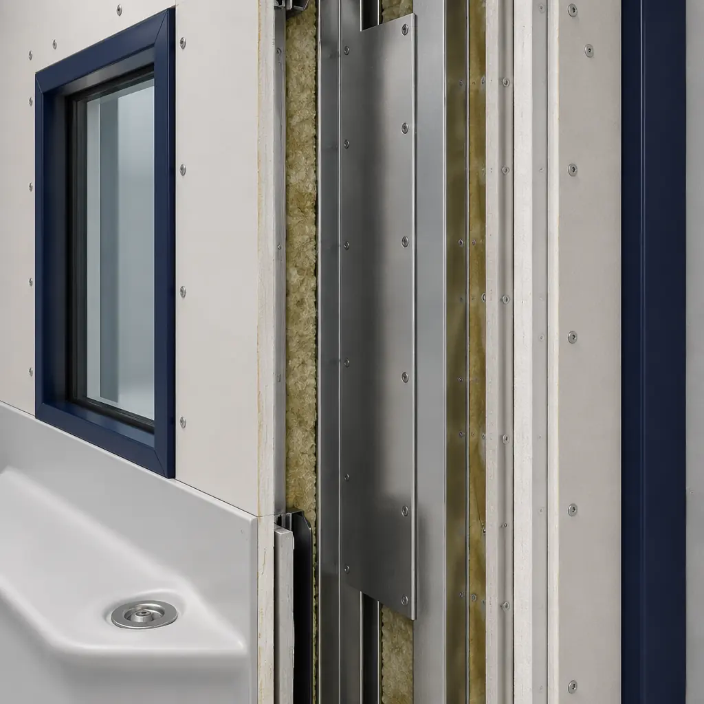
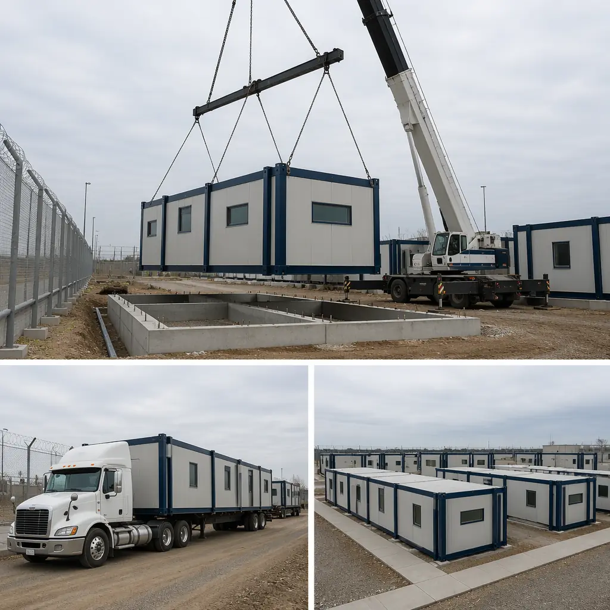
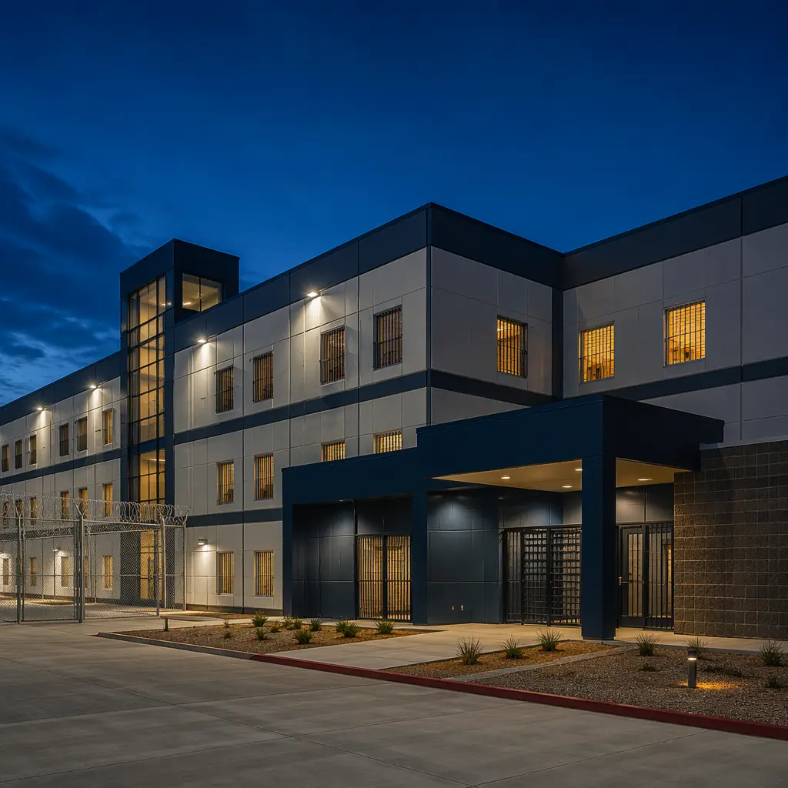

Correctional facilities are among the most demanding building types in the construction industry — and the backlog is staggering. The United States alone houses 1.8 million incarcerated individuals across approximately 1,800 state and federal facilities, more than 40% of which are over 50 years old. State correctional agencies report a combined $33 billion in deferred maintenance, and new facility construction is measured in decades. Every year an overcrowded facility remains open is a year of elevated safety risk for corrections officers, higher per-inmate operational costs, and ongoing constitutional litigation exposure. Modular correctional construction compresses the delivery timeline from 5–8 years to 24–36 months — without compromising the security, anti-ligature, and ballistic-resistance standards that detention facilities demand. This article examines how factory-built modules meet the specific requirements of correctional infrastructure: the security assembly standards that govern detention-grade construction, the regulatory pathway through ACA (American Correctional Association) and NCCHC (National Commission on Correctional Health Care) standards, the cost structure that state procurement teams and bond issuers need to evaluate, and the verification framework for ensuring module compliance before installation.

Why Correctional Construction Takes So Long — And How Modular Changes the Equation
Correctional facility construction faces three structural barriers that modular production directly addresses: security complexity, regulatory layering, and site constraints that conventional construction cannot bypass.
Security is not a single specification — it is a system. A detention-grade facility must satisfy requirements across a dozen interdependent systems: anti-ligature design (every surface, fixture, and penetration rated to prevent self-harm attachment points), ballistic resistance (exterior walls and control posts rated for handgun and rifle fire), controlled access (sally ports, mantrap vestibules, electronic locking systems with redundant power), surveillance infrastructure (CCTV mounting, conduit pathways, control room sightlines), and contraband prevention (scanner integration, visitor processing flow, material screening checkpoints). In conventional construction, these systems are designed by separate consultants and integrated by a general contractor on site — a coordination process that routinely adds 12–18 months to the design phase and another 12 months to construction for change orders and rework. In modular, the security systems for a housing unit are integrated into the module in the factory, where coordination happens once and is replicated across 40, 80, or 120 identical modules. The factory builds the same detention module repeatedly; the security integration gets better with each repetition, not worse.
Regulatory overlap creates delay multipliers. A state correctional facility must satisfy the state building code, the state corrections agency's design guidelines, ACA standards for adult correctional institutions (which reference 66 mandatory and 358 non-mandatory standards), and potentially federal consent decree requirements if the facility is under court supervision. Each regulatory body reviews the design independently, and each review cycle adds 3–6 months. A conventional correctional project may go through 4–6 regulatory review cycles across 2–3 years before breaking ground. Modular construction collapses this timeline by pre-qualifying the module design: a detention housing module that passes state corrections review once can be approved for repeated production across multiple facilities. The regulatory review happens at the module prototype stage, not for every building wing.
Site constraints make conventional construction logistically punishing. Correctional facilities are often built on state-owned land adjacent to existing prisons — sites with active security perimeters, inmate movement schedules, and emergency response protocols that restrict construction access. Delivering materials through a prison perimeter sally port, with vehicle inspections and escort requirements, adds 30–45 minutes per delivery truck. Over 3 years of construction with 8–12 deliveries per day, this logistical friction consumes thousands of labor hours and extends the schedule by months. Modular construction concentrates this friction into a compressed installation window: modules arrive on flatbed trucks over 8–12 weeks, are craned directly onto prepared foundations, and are connected to central utilities. The delivery volume during this window is higher, but the total number of days construction vehicles must cross the security perimeter is 80–90% lower.

Security Assemblies — What Makes a Module Detention-Grade
A correctional module is not a standard commercial module with added bars on the windows. The assemblies that differentiate detention-grade construction from commercial modular construction are specific, tested, and regulated. Understanding these assemblies is essential for any procurement team evaluating modular correctional proposals.
Anti-ligature design. Every surface and fixture in a detention housing unit must eliminate attachment points for ligatures — the mechanism of self-harm that accounts for the majority of in-custody deaths. This requires: plumbing fixtures with sloping surfaces (no horizontal ledges), door hardware with tapered handles (no projections exceeding 1/8 inch), lighting fixtures recessed flush with the ceiling with tamper-proof fasteners, HVAC registers with perforated patterns too small for cord insertion (openings ≤ 1/8 inch), and bed frames welded to the wall or floor with no gaps behind the frame. In modular construction, these requirements become factory production standards. A module's anti-ligature fixtures are installed by the same team, in the same sequence, on every module. The consistency of factory assembly — the 40th module has the same anti-ligature installation quality as the first — eliminates the variability that occurs when a general contractor's drywall, plumbing, and electrical subcontractors install anti-ligature fixtures for the first time on a job site.
| Security Assembly | Modular (Factory-Built) | Conventional Site-Built |
|---|---|---|
| Wall construction | Steel studs at 12" OC + 5/8" Type X gypsum both sides + 14-gauge steel plate mid-cavity (UL 752 Level 3 ballistic) | CMU block with grouted cells + surface-applied ballistic panels (field-fitted, joint gaps common) |
| Door assemblies | ASTM F33 detention-grade hollow metal doors, pre-hung in factory frame, electronic strike pre-wired | Field-hung doors with on-site frame welding and strike coordination; door warp from weather exposure common |
| Glazing | ASTM F1233 security glazing (Level III), factory-sealed in steel frame, tested before module ships | Glazing installed in field after wall construction; weather exposure and sealant curing delays |
| Plumbing fixtures | Combination stainless steel toilet-lavatory unit, anti-ligature, factory pressure-tested | Field-installed fixtures; ligature-point inspection after installation, rework common |
| HVAC registers | Tamper-proof security registers with ≤1/8" perforation, factory-mounted and sealed | Standard registers installed in field; security register retrofit required after ACA inspection |
| Ceiling construction | Security-rated gypsum ceiling, tamper-proof fasteners, all penetrations sealed at factory | Suspended ceiling with accessible plenum; security retrofit adds cost and reduces ceiling height |
Ballistic resistance. Correctional facility control rooms, sally ports, and perimeter observation posts require ballistic-rated assemblies. UL 752 Level 3 (handgun up to .44 Magnum) is the minimum for control posts; Level 5 (7.62mm rifle) is specified for perimeter towers and exterior walls facing public access roads. In modular construction, ballistic steel plate — 14-gauge (Level 3) to 1/4-inch (Level 5) — is factory-welded into the module's steel frame between the stud cavity and the interior finish. The ballistic plate becomes a permanent structural element of the module, not a field-applied panel that relies on fastener spacing for its rating. Each module's ballistic assembly is documented with mill certificates and weld inspection reports, providing the traceability that government procurement contracts require.
Electronic security and surveillance infrastructure. Correctional modules are pre-wired for the facility's electronic security systems: door position switches, intercom stations, CCTV camera mounts (with conduit pathways to the head-end room), duress alarm buttons, and cell call systems. The low-voltage wiring is run through steel conduit — not loose cable — embedded in the module walls, with pull boxes at module-to-module connection points. This pre-wired infrastructure eliminates the single largest source of correctional construction delay: the 6–9 months of low-voltage installation and commissioning that occurs after the building is enclosed in conventional construction. In modular, the security electronics are commissioned module by module in the factory, and the site commissioning is limited to verifying inter-module connections and head-end integration — a process measured in weeks, not months.

Regulatory Compliance — ACA, NCCHC, and the Modular Approval Pathway
Correctional facilities are governed by a regulatory framework that is distinct from commercial, residential, or even healthcare construction. The American Correctional Association (ACA) publishes the Standards for Adult Correctional Institutions, which define mandatory requirements for housing unit design, health services spaces, food service facilities, and administrative areas. The National Commission on Correctional Health Care (NCCHC) publishes complementary standards for medical, dental, and mental health spaces within correctional facilities. Modular construction meets these standards through a compliance pathway that state agencies and accreditation auditors are increasingly recognizing as more auditable than site-built construction.
ACA Standard 4-ALDF-2A-01 through 2A-12 governs housing unit design: minimum cell size (35 sq ft unencumbered for single occupancy, per ACA; many states require 60–80 sq ft), access to natural light (minimum 3 sq ft of glazing per cell, per ASTM F1233 Level III security glazing), ventilation rates (15 CFM per occupant of outside air, per ASHRAE 62.1), and toilet-lavatory fixture access. In modular construction, each housing module is built to these dimensional and performance standards as a production template. The cell dimensions, glazing area, ventilation duct sizing, and fixture clearances are verified once for the prototype module and replicated for every module in the production run. An ACA auditor reviewing a modular facility can inspect one module and verify that the remaining 79 modules were built to the same production standard — a level of audit efficiency that site-built facilities, with their inherent construction variability, cannot offer.
NCCHC health services standards require medical, dental, and mental health treatment spaces within correctional facilities to meet specific design criteria: exam room minimum 80 sq ft with handwashing sink, medication preparation area with secure storage, negative-pressure isolation room for infectious disease management (12 ACH, HEPA-filtered exhaust), and mental health observation rooms with ligature-resistant design and continuous visibility from the nursing station. Modular construction addresses these requirements through the same medical-facility-grade module production that serves hospital and healthcare clients. A modular correctional medical unit is built to the same FGI-compliant specifications as a modular hospital patient wing — the same HEPA filtration, the same medical gas infrastructure, the same infection control construction protocols — applied within a correctional security perimeter. For state agencies evaluating modular proposals, our analysis of modular hospital construction — building acute care facilities 50% faster provides the healthcare-specific regulatory pathway that applies equally to correctional medical units.

Cost Structure — What State Procurement Teams and Bond Issuers Need to Know
Correctional facility construction is funded through a mix of state general obligation bonds, federal grants (Bureau of Justice Assistance facility grants), and occasionally public-private partnership structures. The cost metric that matters to a state corrections agency and its bond counsel is not the per-square-foot hard cost — it is the total project cost including construction financing, escalation contingency, and the operational cost of maintaining the existing facility during construction. When measured this way, modular correctional construction outperforms conventional construction by 15–25% on total project economics.
The hard-cost comparison: modular detention-grade construction typically ranges from $450–$700 per square foot depending on security classification — minimum-security dormitory-style housing at the low end, maximum-security single-cell units with individual recreation yards at the high end. Conventional correctional construction in the same categories runs $550–$850 per square foot. The 15–20% hard-cost savings come from factory labor productivity (no weather delays, no trade stacking conflicts, no security-perimeter delivery friction), reduced general conditions cost (shorter site duration = fewer months of site security, construction fencing, and temporary facilities), and reduced change-order exposure (design coordination happens at the prototype stage, not during construction).
But the larger financial impact — the one that changes the net present value of a correctional project by $20–$40 million on a $300 million facility — comes from three sources that conventional cost-per-square-foot analysis misses:
- Bond interest savings. A $250 million general obligation bond at 4.0% costs approximately $20 million in interest over a 4-year construction draw period. Modular construction compresses this to a 2-year draw period — saving $10 million in interest alone. For a state facing competing demands for education, healthcare, and infrastructure funding, this is not a rounding error; it is a material budget item.
- Inmate relocation cost avoidance. When a state builds a replacement facility, it must continue housing inmates in the existing facility during construction. Overcrowded facilities cost more to operate: higher staffing ratios, elevated overtime, increased medical transports for facility-related health issues (mold, HVAC failure, inadequate plumbing). A 3-year conventional construction timeline means 3 years of these elevated operational costs. Modular construction's 24-month timeline eliminates one-third of this operational burden — saving $8–$15 million depending on facility size and overcrowding severity.
- Litigation risk reduction. State correctional agencies operating overcrowded or dilapidated facilities face constitutional litigation under the Eighth Amendment (cruel and unusual punishment). The California prison system alone spent $2.1 billion on court-ordered facility improvements over a decade. Every month a new facility is delayed is a month of ongoing litigation exposure. Modular construction's schedule compression directly reduces this risk, and the documentation trail of factory-built, inspected modules strengthens the state's compliance position in any subsequent court review.
For a comprehensive framework on construction financing structures, see our guide to modular construction financing — loans, insurance, and funding models for developers. For a detailed square-foot cost comparison across building types, refer to our 2026 modular construction cost per square foot guide.
Fire Safety and Life Safety in Correctional Facilities
Correctional facility fire safety presents a unique challenge: the occupants cannot self-evacuate. Fire-rated compartmentation, smoke control, and defended-in-place strategies are not optional enhancements — they are the core life safety strategy. Modular correctional construction addresses fire safety with the same assembly-level approach documented in our broader fire safety analysis, with correctional-specific enhancements.
Steel-framed modular construction — the standard for detention-grade modules — provides non-combustible construction (IBC Type IIA or IB). Cell block modules are separated by 2-hour fire-rated walls that extend from the structural slab to the underside of the floor above, with intumescent gaskets and mineral wool fire safing at module-to-module joints. Smoke compartments in correctional facilities are smaller than in commercial buildings: typically 10,000 sq ft maximum (versus 22,500 sq ft for hospitals), reflecting the reality that evacuating restrained occupants takes longer and requires correctional officer escort. Modular construction's inherent compartmentation — each module is a self-contained fire compartment with rated walls on all four sides — aligns naturally with correctional fire safety requirements. For the full technical analysis of how modular construction achieves fire-rated compliance, see our article on modular construction fire safety — fire-rated assemblies, code compliance, and passive protection.
Procurement and Contracting — What Government Agencies Should Verify Before Signing
State procurement laws — often codified in state administrative code chapters governing "Design-Build for Correctional Facilities" or "Alternative Project Delivery for Public Works" — require specific qualification thresholds for modular correctional contractors. Here is the verification framework that government procurement teams should apply before awarding a modular correctional contract:
- Detention equipment integration experience. The modular manufacturer must demonstrate completed projects where they integrated third-party detention equipment — electronic locking systems (Southern Folger, Willo Products, or equivalent), security glazing (ASTM F1233 Level III minimum), and control room electronics — into factory-built modules. A manufacturer whose detention experience is limited to installing a few security doors in a standard module cannot deliver a code-compliant correctional facility. Request a project list with facility names, security classifications, and commissioning dates.
- ACA auditor pre-qualification. The strongest signal of modular correctional competence is whether an ACA auditor has reviewed and accepted the manufacturer's module design for compliance with ACA housing unit standards. Some state corrections agencies require this pre-qualification before a manufacturer can bid on state correctional projects. If the manufacturer has not undergone an ACA design review, factor an additional 6–9 months into the schedule for that review process.
- Module joint fire-stopping for detention occupancy. Correctional module joints — particularly at cell block walls and smoke barriers — must maintain fire-resistance ratings under conditions that include security door hold-open devices and inmate-occupied compartments. Request UL 2079 or ASTM E1966 joint system test data for the specific module-to-module connection detail. This is not the same joint system used in commercial modular construction, and commercial joint test data is not sufficient for detention occupancy.
- Anti-ligature inspection protocol. The manufacturer must have a documented factory inspection protocol for anti-ligature compliance, with a checklist that is completed and signed for every module produced. This checklist should cover: fixture projection measurements, surface slope verification, tamper-proof fastener confirmation, and HVAC register perforation size verification. On a site-built project, the anti-ligature inspection is performed once, at final inspection, and any deficiencies found require destructive rework. In modular, the inspection is performed on every module before it leaves the factory, when corrections are fast and non-destructive.
- Government procurement compliance. For state-funded projects, the manufacturer must demonstrate experience with state prevailing wage requirements, disadvantaged business enterprise (DBE) participation goals, and Buy America Act compliance for federally funded components. Modular correctional projects that involve federal grant funding (Bureau of Justice Assistance, USDA Rural Development) may require Buy America certification for steel components — and factory-produced steel modules, with documented domestic steel sourcing, provide a cleaner compliance pathway than site-built construction with multi-source steel procurement.
For the broader context of modular construction for public-sector projects, see our analysis of modular government and municipal buildings — faster public infrastructure delivery, which covers the procurement frameworks that apply across all government building types.

Comparison: Modular vs. Conventional Correctional Construction
| Project Dimension | Modular Correctional | Conventional Site-Built |
|---|---|---|
| Design + permitting | 12–18 months (module prototype review) | 24–36 months (full building design + regulatory review) |
| Construction duration | 12–18 months (factory + site parallel) | 36–60 months (sequential site construction) |
| Security system integration | Factory pre-wired, module-level commissioning | Field-installed, 6–9 months low-voltage commissioning |
| Anti-ligature inspection | Per-module factory inspection before shipping | Single final inspection; deficiencies require destructive rework |
| Weather exposure | Modules built indoors; 4–8 week exterior installation window | 3–5 years of weather exposure during construction |
| Hard cost per sq ft | $450–$700 (varies by security classification) | $550–$850 (varies by security classification) |
| Total project delivery | 24–36 months from contract to occupancy | 60–96 months from contract to occupancy |
For a detailed decision framework across schedule, cost, and quality, see our comparison of modular versus traditional construction, which applies across all building types including the correctional sector.
Is Modular Right for Your Correctional Project?
Modular correctional construction is not the right solution for every justice infrastructure project — but it is the right solution for a specific profile that represents the majority of current state correctional needs: overcrowded facilities requiring rapid capacity expansion, replacement facilities where the existing site must remain operational during construction, and specialized units (medical, mental health, intake/classification) where the MEP complexity benefits disproportionately from factory integration. States that have deferred correctional construction for decades — and are now facing court-ordered capacity increases, aging infrastructure failures, and correctional officer safety crises — should evaluate modular as their default delivery method, not as an alternative to be considered after conventional construction estimates come in 50% over budget and 3 years behind schedule.
The modular correctional construction market is still emerging, and not every modular manufacturer has the detention-grade expertise required. But for the manufacturers that do — and for the state agencies that evaluate them rigorously — modular correctional construction offers a timeline, cost, and quality proposition that conventional construction, after decades of cost overruns and schedule failures, cannot match.